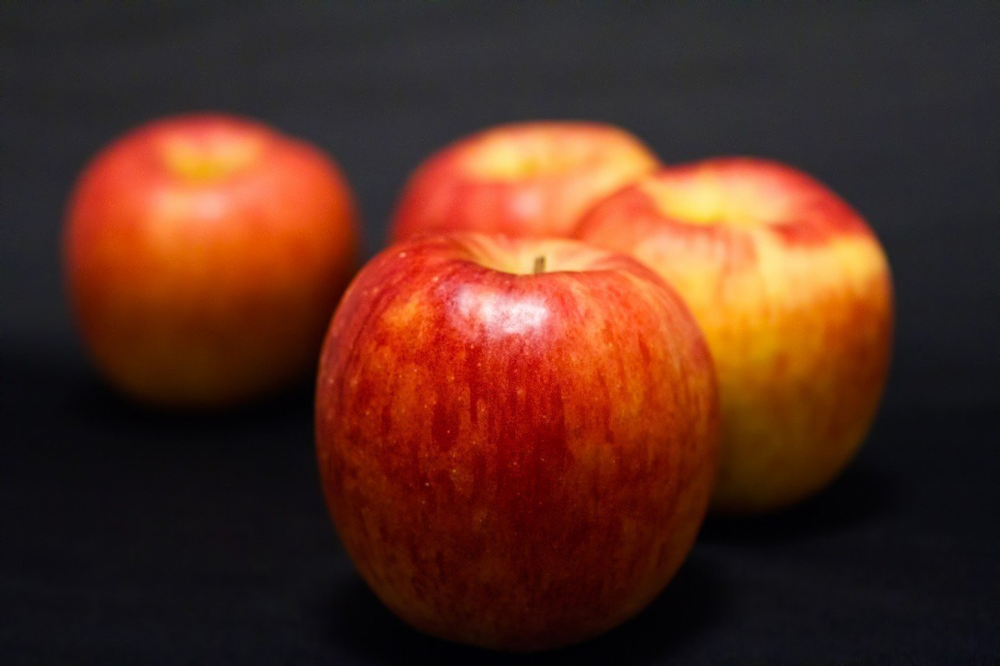

このお話の主人公は、ごくごく普通の赤い林檎です。
林檎がこの家にやってきたのは2日前のことです。
林檎として生を受け、農家の方々の手によって大切に育てられたのち、都内のスーパーに出荷され、無事に買い手となる優しそうな主人たち家族に買い取られました。
ここまで順調な道のりだった林檎でしたが、果物を含む食べ物という存在は本来、人に食べられることが目的です。
そして、食べ物にとって最も不幸な出来事は、誰にも食べられずに捨てられるということです。だから、食べ物は常日頃から必死に自分自身の魅力を人間たちにアピールしてきました。しかも、大抵の食べ物には食べることのできる期限が定められており、時間との勝負でもあります。
しかし、林檎はここまで特にこれといった苦労をしてきたわけでもなく、ただ何も考えずに成り行きに身を任せていました。
これは、そんな林檎が出くわすこととなる、果物たちの闘いの記録です。
とある日、林檎はテーブルの上に佇んでいました。
今日は、主人たち家族がいつものように買い物に出かけておりました。
林檎は、そんな家族の姿を見て、一緒に育った林檎農家のみんなの顔を思い出していました。
「みんな今頃どうしてるのかなあ……」
すると突然、黄色い細長い物体が林檎をつついてきました。
「痛い、痛い！ 誰？」
そう林檎が答えると、独自のカーブが特徴的で、所々黒い模様が渋いバナナが怖い顔をしていました。
「おい新人！ 主人に目立とうとしてテーブルのど真ん中に陣取るとは……いい度胸だな」
林檎はめんどくさそうに応答します。
「違うよ。私、あんまり端にいると少しの揺れで下に落ちちゃうから、安全のためにここにいるの」
「どうだか」
バナナはまだ信じようとしません。
すると、今度は林檎より少し大きな丸い物体がこちらに近づいてきます。
その物体は、バナナの突き攻撃によって端に寄せられていた林檎の代わりに、堂々とテーブルの真ん中へと踊り出ました。
「何者だっ！?」
バナナが顔を向けると、桃は林檎を庇うように前に出ました。
「あんた、林檎の気持ちも知らないでよく言えるわね！ あたいら球体は、いつも不安定な状態で暮らしていること位、すぐに想像できるでしょ！ 少しは考えることを覚えたらどうなの！」
「何だと！？ 言ったな！」
バナナが声を張り上げます。
林檎は、桃とバナナがいがみ合っているのを見て、ただただあたふたしていました。
「おいおい、何だか物騒なことになっていると思ったら……。君ら少し頭を冷やしたらどうだい？」
そんな様子を見かねてか、今度はクールで透き通った声が林檎の後ろから聞こえました。
葡萄の声です。
「確かに桃の言っていること、バナナの言っていること、どっちもよく分かるよ。僕は桃のように1つ1つが球体だし、それに、バナナのように目立ちたがり屋さんでもあるんだ。でも、同じテーブルにいる果物同士が喧嘩して何になる？ 僕らは同じ場所に暮らす、いわば仲間みたいなものじゃないか！ 仲良くしようよ」
そう言って、葡萄は桃とバナナの間に入りました。
いがみ合っていた両者は、葡萄に諭されたこともあってか、徐々に冷静さを取り戻していきました。
そんな様子を見て、林檎がいつもの平和を感じかけたその時……！ 林檎はある事実に気づいてしまいました。
それは、その騒動が終わり、バナナがテーブルの目立たない所に戻りしばらく経っても、桃と葡萄は真ん中から微動だにしなかったことがきっかけでした。
林檎は、桃と葡萄が親密に話しているように見えても、両者の会話はとてもぎこちなく、他人行儀であるように思いました。
林檎をバナナの言いがかりから助けてくれた桃と葡萄は、このいざこざの最中に林檎よりもより真ん中に陣取っていました。
つまり、桃と葡萄は林檎を庇うようにして、自分自身が最も真ん中に位置するようにこの騒動に介入してきたのです。
林檎はこの事実に気づいた時、素直に真ん中にいることへの嫉妬を露わにしたバナナよりも、よっぽど桃と葡萄両者における、テーブルの真ん中へ位置することへの執着に対して恐怖感を覚えました。
なんせ、林檎は危うくその事実を見過ごしかけたほど、桃と葡萄の演技はとても手の込んだものだったのですから。
「偽善者……」
林檎は心の中でそう呟きました。
しかし、林檎は別にテーブルのど真ん中に位置しなくてもいいと思っていました。
それは、林檎はただ単純に自分自身がテーブルの下に落ちないように、端にさえいなければいい位の気持ちしか持っていなかったからです。
桃と葡萄が話をしているのを見てか、ほかの果物たちもぞろぞろとやってきました。
蜜柑、西瓜、キウイ、梨、苺……。いつの間にかテーブルには、林檎の居場所がなくなってしまう位、果物たちが密集していました。
その日の夕方。家の鍵が開く音がしました。どうやら主人たち家族が帰ってきたようです。
その瞬間、テーブルの上にある果物たちも即座に目を瞑り、動かなくなりました。
「わあ！？ こんなに果物がいっぱいある！」
主人の娘が騒ぎます。
「あら、こんなにたくさんあったかしら？ まあいいわ。ねえ、夕食の後、どの果物が食べたい？ 好きなの選んでいいよ」
奥さんの優しい声が響きました。すると、娘は間髪入れずに
「林檎ちゃん！ 林檎ちゃんが食べたい！」
と、端に寄せられていた林檎を指差して言いました。
「分かったわ！ 昔から好きだものね。ならそうしましょう」
奥さんはそう言って、林檎を台所へと持っていきました。
林檎は複雑な思いで、奥さんの手の中に収まりました。
あんなにもほかの果物たちが真っ先に食べられようとして、テーブルの真ん中に陣取り、一番目立とうとしても、食べる側の好き嫌いで決められてしまっては元も子もないなあ、と林檎はぼんやり思いました。
林檎がちらっとテーブルに目を向けると、桃が悲しげな顔をしてこちらを見ていました。
葡萄は、1つ1つが様々な表情をしていました。さっきは皆が揃って同じ表情だったのに、今度は林檎が選ばれるというまさかの事態に動揺してか、睨みつけたり、または愕然とした顔だったり、はたまた目を背けたままであったりと、葡萄の総意は判然としませんでした。
ほかの果物たちも、悔しそうに林檎を見ていました。
一方、バナナは意外にもにこやかな表情で、林檎にウインクをしました。案外、バナナが一番憎めないやつだったのかもしれません。
台所に着いた林檎は、しばらく主人たち家族の夕食風景を見ていました。今日はカレーのようです。
さきほどまでテーブルの真ん中に置かれていた果物たちは、冷蔵庫へと連れていかれ、今はその姿さえも見ることができません。
林檎が世の無常を感じていると、後ろからとても鋭い声がしました。
「おい、林檎……まだお前が食われるとは決まっちゃいないからな……。俺は最後まで諦めねえ」
恐る恐る林檎が後ろを振り向くと、それは大きなパイナップルが凄い剣幕でこちらを見ていました。トゲトゲボディーがキラリと輝きを放っています。
「あらっ！ 実は私、テーブルよりこっちの方がなんだか落ち着くの。不思議なものね。だから、気にすることなくってよ」
林檎は清々しい笑顔でそう答えました。
林檎もようやく、果物界の戦い方を身につけ始めたようでした。